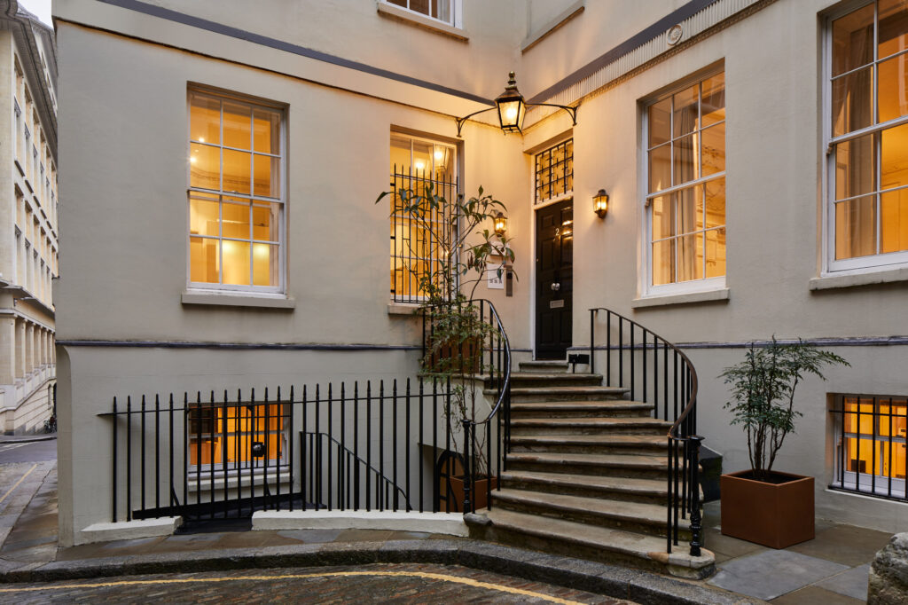
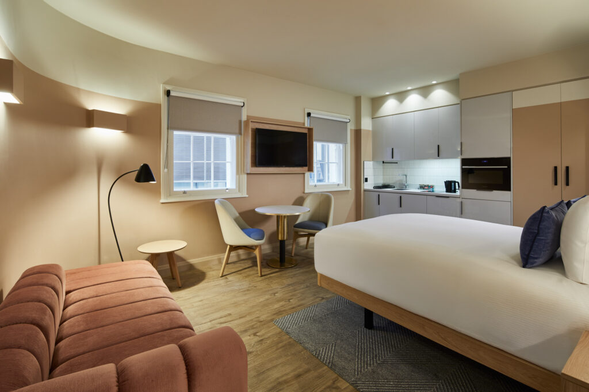
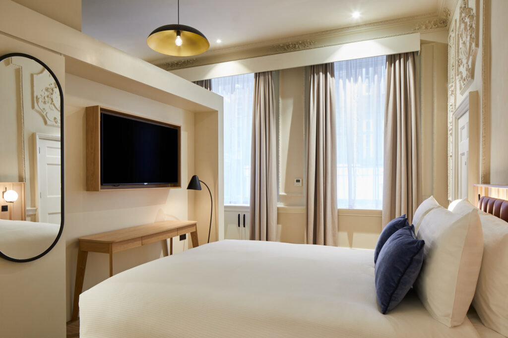

2 Suffolk Lane, London EC4R 0AT · Map
London · Serviced Apartments
Nestled in the heart of The City of London, master Cannon serviced apartments provide an exceptional stay for both business professionals and leisure travelers. Just a five-minute walk from Cannon Street mainline rail and underground station, this prime location offers seamless access to London's financial district, iconic landmarks, and a wealth of cultural and entertainment attractions. Whether you're here for work or to immerse yourself in the vibrant city life, master Cannon is the perfect starting point.
Located in London's historic financial district, the property is surrounded by world-famous attractions such as the Tower of London, St Paul's Cathedral, and Shakespeare's Globe Theatre. For retail and dining, explore the independent boutiques and eateries of Bow Lane, or visit The Ned, Bloomberg Arcade, and the Royal Exchange shopping center. With Cannon Street station just steps away and London City Airport only eight miles away, master Cannon ensures easy travel within and beyond the city. Business hubs, tech markets, and major insurance firms are all within reach, making it a top choice for corporate stays. The property features 27 modern serviced apartments, each designed with both style and functionality in mind. Guests enjoy fully fitted kitchens, contemporary bathrooms, and amenities like Wi-Fi, TVs, and comfort heating and cooling systems.
27 apartments
master Cannon serviced apartments provide 27 fully equipped apartments designed for comfort and practicality. Each space features modern amenities, including Wi-Fi, flat-screen TVs, and kitchens fitted with appliances, offering all the essentials for a convenient stay.
The interiors are inspired by Scandinavian minimalism, with a warm palette of neutrals, browns, and muted earthy tones. Wooden flooring, simple furniture in natural finishes, and cozy fabrics create a welcoming and comfortable atmosphere. Clean lines and uncluttered spaces ensure a sense of calm, while functional layouts maximize comfort and usability. Experience a perfect blend of modern minimalism and natural elegance during your stay.



Services & facilities
A welcoming space to relax, meet, or prepare for your day in the heart of London.
Convenient on-site facilities to keep your wardrobe fresh and ready during your stay.
Secure storage for your belongings, offering peace of mind as you explore the city.
The neighbourhood
2 Suffolk Lane, London EC4R 0AT
The interactive map could not load. The address is 2 Suffolk Lane, London EC4R 0AT.
2 Suffolk Lane, London EC4R 0AT
2 Suffolk Lane, EC4R 0AT
Located in the heart of London’s historic financial district, master Cannon serviced apartments offer an unparalleled base for exploring the city. Situated just a minute’s walk from Cannon Street station and surrounded by some of London’s most iconic landmarks, the property blends convenience with cultural vibrancy.
Good to know
FAQ
master Cannon offers Serviced Apartments that combine private living spaces with hotel-style services, including virtual guest support, housekeeping, and laundry facilities.
master Cannon suits business travellers, couples, and families seeking spacious serviced apartments with kitchen facilities in the heart of London’s financial district.
Yes. Apartments include a dedicated workspace, high-speed fibre Wi-Fi, and direct access to Cannon Street station, making it well suited for business stays in the City of London.
Yes. The property expressly supports extended stays, with fully equipped kitchens, on-site laundry facilities, and apartment-style layouts designed for comfortable long-term living.
Yes, high-speed fibre WiFi is complimentary throughout all apartments and common areas.
There are 27 individually designed serviced apartments available for guest stays.
Yes, the property includes a welcoming ground-floor lobby with comfortable seating for guests and visitors.
Yes, a shared laundry room is available, and laundry capsules are provided.
Yes, master Cannon provides secure luggage storage lockers for guests.
Yes, the entire building is non-smoking; smoking is prohibited in all areas.
Each apartment includes a comfortable desk or table suitable for remote work, alongside reliable high-speed fibre internet throughout the building.
Yes, upper floors are fully accessible by elevator from the ground lobby level.
It is located at 2 Suffolk Lane, EC4R 0AT, between Cannon Street and Bank in the historic financial district.
It is approximately a five-minute walk from the front door to Cannon Street station entrances.
London City Airport, about eight miles away, can generally be reached in 25–30 minutes by car.
No, on-site parking is unavailable; several public car parks are located within a short walk of master Cannon.
From master Cannon, London Bridge is about a five-minute walk via King William Street.
St Paul’s Cathedral is less than 0.6 miles from master Cannon, roughly a ten-minute walk.
No, nearby street parking is metered; free spaces are effectively unavailable. Several public car parks are within a short walk.
Yes, every apartment features a fully equipped kitchen, refrigerator, oven, stovetop and cookware.
Yes, each apartment has individual controls; however, the system operates seasonally, switching between heating or cooling rather than both simultaneously.
Yes, every apartment is supplied with high-quality linens and plush bedding that provide a premium sleeping experience for all guests.
Yes, complimentary bathroom toiletries and a hairdryer are supplied in every private bathroom.
Yes, each apartment includes a personal laptop-size safe deposit box for valuables.
Yes, coffee machines, electric kettles and tea-making facilities are provided in every kitchen.
Yes, each apartment features a Smart TV with built-in streaming platforms and satellite channels.
Yes, an iron and full-size ironing board are supplied in every apartment.
Yes, apartments are built with soundproofing to minimise external and internal noise.
Professional housekeeping and fresh linens are provided every seven days. Additional cleaning services are available upon request for a fee.
Yes, every apartment includes a self-contained kitchen fully equipped for complete meal preparation.
Yes, a full set of cookware, cooking utensils and dining tableware is provided.
Yes, each apartment at master Cannon includes a dining table or seating area.
Guests can order meals through popular apps such as Deliveroo, Uber Eats, or Just Eat. To maintain building security, couriers deliver to the main entrance, where guests can collect their orders directly from the driver.
Check-in at master Cannon begins at 3:00 PM.
Check-out at master Cannon is required by 11:00 AM.
master Cannon operates self-check-in; your apartment PIN arrives at 9:00 AM on arrival day via WhatsApp and email.
No, identification or credit card presentation is not required on arrival, as check-in is completed online in advance.
The minimum age for check-in is 18 years unless accompanied by a parent or guardian.
Your apartment PIN is sent at 9:00 AM on your arrival day via WhatsApp or email. Contact support if you have not received your code by check-in time.
Guests may be required to complete digital verification and provide identification before receiving their access code.
Please contact Guest Relations immediately via WhatsApp (+443308187011) or email easytravelagency@trustagent.space; we will verify your booking and assist.
The online check-in process usually takes only a few minutes once all the required information is submitted.
Official invoices are issued at the end of the stay. To ensure your document is accurate, please provide any specific billing details or company information to our team prior to your check-out date. Unfortunately, it is not possible to make changes to the invoice details after the invoice is issued.
Cancellation and prepayment conditions vary by rate; the policy shown during booking will apply.
No security deposit is taken, but a valid credit card is required and may be pre-authorised for any damages or incidentals.
Payments are accepted via a secure online link; credit cards only, cash is not accepted.
Yes, master Cannon welcomes trained dogs for an additional charge of 20 GBP per night; they must never be left unattended, stay off sofas and beds, and any damage is the guest’s responsibility.
Parties and events are not permitted in any apartment or shared area.
Yes, children of all ages are welcome to stay with accompanying adults.
The confirmed price includes VAT. London does not currently impose a mandatory tourism or visitor levy, so no additional local tax surcharge applies at this time.
Studios accommodate 1–2 guests, while the Studio with a Sofa Bed hosts up to 3 guests. One-Bedroom Open-Plan apartments sleep up to 4 guests, and Family Apartments accommodate up to 4, 5, or 6 guests, depending on the apartment selected.
The Tower of London is located less than one kilometer away, making it an easy 15-minute walk from your door.
Yes, guests can walk to Shakespeare’s Globe in roughly twelve to fifteen minutes via Southwark Bridge.
Bow Lane boutiques and the luxury Royal Exchange arcade are each just a few minutes walk from the property.
London Bridge is five minutes away, while Borough Market is approximately a twelve-minute riverside walk.
Bloomberg Arcade and the eateries inside The Ned are both within a ten-minute walk of master Cannon.
Walk to St. Paul’s Cathedral, Borough Market, the Tate Modern, and the Tower of London. Excellent transport links put the entire city within easy reach.
Gallery
Every photo of master Cannon. Tap any image to open it full size.
Save More, Stay More: Book Directly With master For A 5% Discount Today! — master Cannon